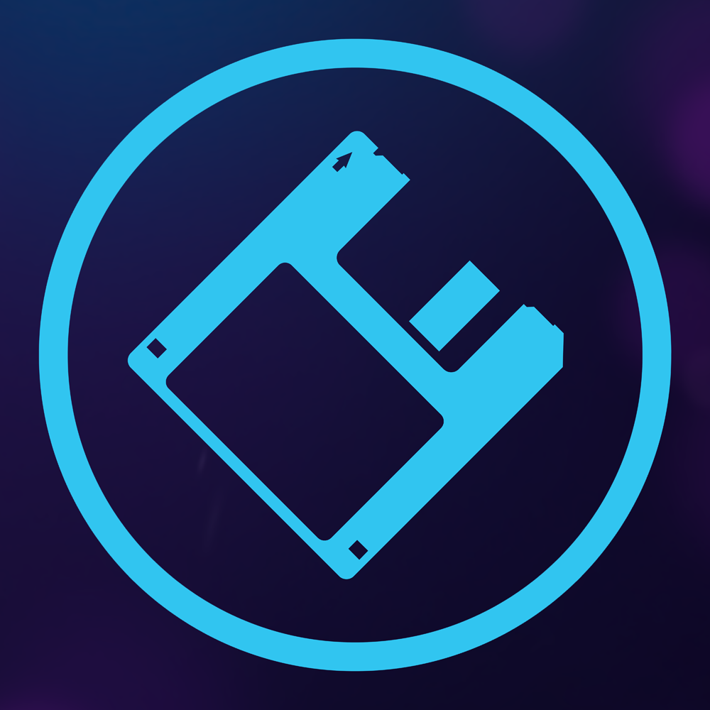

Strona główna |
Dziennik zdarzeń |
Poradniki |
Kolekcje |
Linki |
O mnie
O Mnie

Dzień dobry! Jestem Matlaw.
Pokręcony "informatyk", uwielbiający elektronikę (przy czym często coś psuje). Miłośnik starszej technologii, fanatyk wszystkiego, co polubi.
Czy coś więcej mogę o sobie powiedzieć?
No, jestem studentem i próbuję znaleźć swoje miejsce na tym świecie. Od małego interesuję się elektroniką wszelaką i komputerami.
W magicznej krainie informatyki zajmuję się raczej sprzętem, gdyż jak odkryłem, programowanie to nie jest mój konik.
Jak być może widać w kategorii "kolekcje", trochę uzbierałem przez lata różnych gratów.
Zainspirowany wieloma twórcami, do których linki można znaleźć
na moim kanale na YouTube, pomyślałem by też tego spróbować.
Czemu by się tym nie podzielić w Internetach? To w końcu też jakaś forma uchowania historii.
Pytania i odpowiedzi
- Dlaczego twój nick to Matlaw?
To jest trochę dziwna historia. W 2012 miałem Samsunga Galaxy Ace i wgrywałem na niego custom ROMy tworzone przez człowieka o nicku Macław.
Potem na XDA-Developers założyłem konto i z braku pomysłu po prostu podmieniłem "Mac" od Maciek na cząstkę mojego imienia i pozbyłem się polskiej litery. Serio.
Tak już zostało i dalej używam tego nicku. W sumie, trochę się nawet związałem z tą nazwą.
- Dlaczego głównie starocie?
Dla mnie odkrywanie tego, co istniało długo przed moimi narodzinami jest niezwykle fascynujące. To de facto poznawanie czegoś zupełnie nowego, innego, tyle, że w przeszłości.
Mogę również porównywać, z tym, co jest współcześnie i podziwiać kierunek ewolucji.
- Jakie masz hobby?
Jak wspomniałem, to głównie elektronika. Próbuję drobnych napraw, trochę majsterkować oraz ostatnio odkrywam sztukę rysowania (na tablecie graficznym) i grania na syntezatorze.
- O co chodzi z tą stroną? Czemu jest taka?
Cóż, bardzo mi się spodobała strona Piteusza. Nie spodziewałem się, że tak prosta strona może wyglądać nie tak źle i być bardzo funkcjonalna.
Postanowiłem zrobić coś podobnego. Mogę tutaj publikować jakieś pierdoły, bądź informacje niedotyczące bezpośrednio kanału na YouTube.
Nigdy nie robiłem stron na poważnie, więc dużo nie umiem. Nie ogarniam też CSS.
Są jednak z tego plusy. Ta strona ładuje się bardzo szybko, nie zużywa zbędnych zasobów i jest w stanie wyświetlić się na prawie wszystkim,
co posiada jakąś formę przeglądarki internetowej i dostęp do Internetu.
^ Wróć na górę strony ^
Gra i trąbi zespół Kombi
Jakiekolwiek prawa ostrzyżone
© 2020-2020 Matlaw the Geek